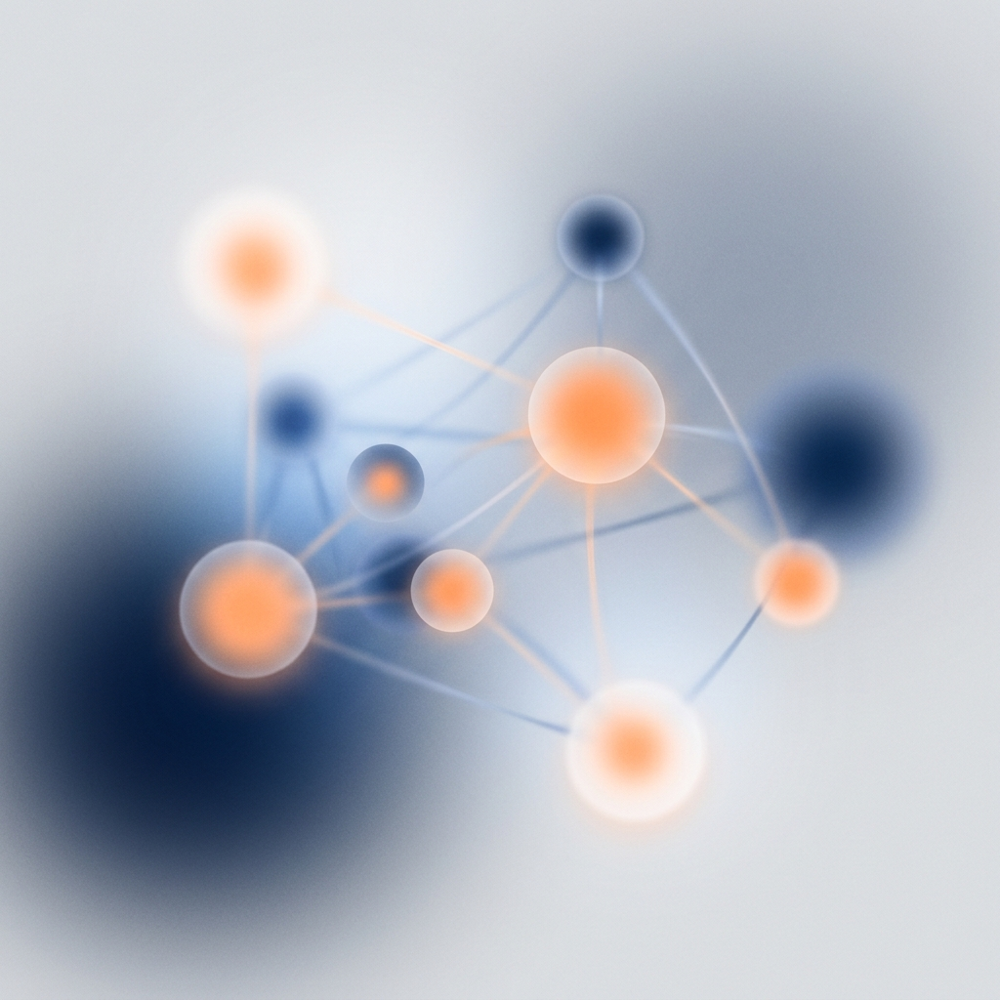
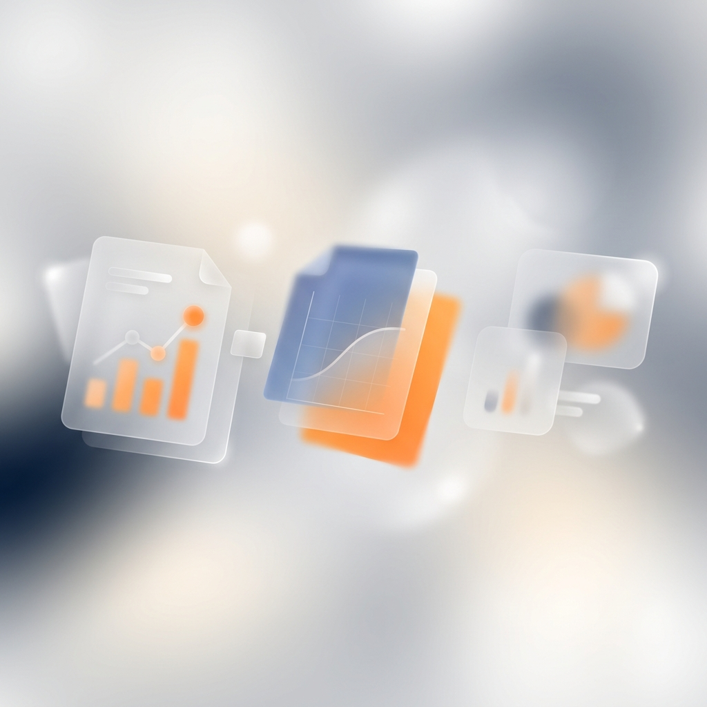

У Вінниці презентували результати бюджету участі
Мешканці обрали 14 проєктів благоустрою та освіти.
Новини та матеріали ресурсних центрів і партнерських організацій мережі в одному місці.

Мешканці обрали 14 проєктів благоустрою та освіти.
Консультації щодо статутів і реєстрації для мешканців кварталів.
Практичні навички першої допомоги та організації укриттів.

Понад 200 мешканців долучилися до обговорення пріоритетів.
Ресурсний центр підготував пропозиції до робочої групи.
Ініціативи громади представили свої проєкти партнерам.
Мешканців навчали користуватися петиціями та е-консультаціями.
Обговорили спільні проблеми та план дій на рік.
Досвід трьох громад з ресурсами від міжнародних партнерів.
Спробуйте інший запит або оберіть «Усі напрями».